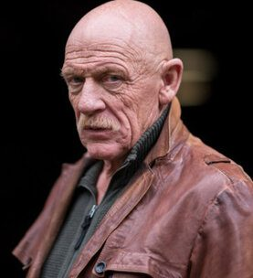
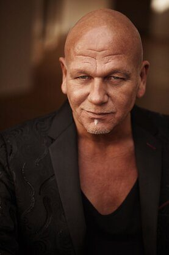
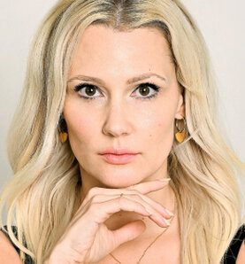
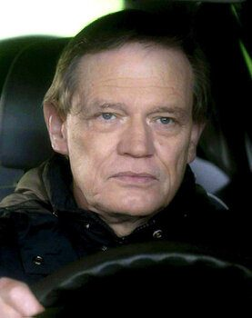
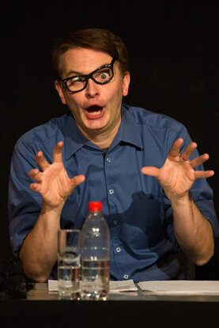
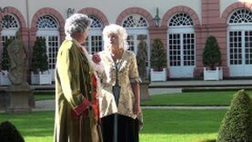
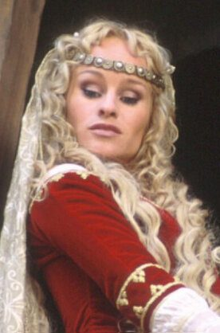
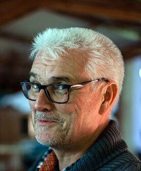
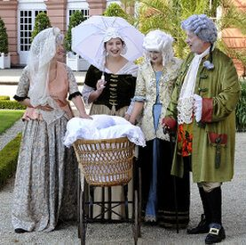
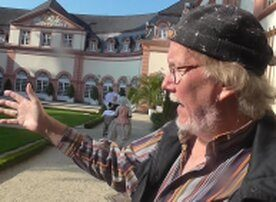

Austern für den Grafen
Die Liebe, die Pracht und der Tod
Ein Hauch Hollywood kommt nach Weilburg – Verfilmung mit Staraufgebot!
In Weilburg wird ein großer und sehr opulenter Spiel- und Fernsehfilm gedreht. Wegen Pandemie und organisatorischen Gründen werden die Hauptdrehtermine erst nach 2024 stattfinden. Wir sind dabei, die letzten finanziellen Lücken zu schließen. Wir möchten Sie herzlich einladen, an dem großartigen Projekt teilzuhaben, und dies von Anfang an.
Wir werden Hollywood in die historische Innenstadt zaubern und produzieren einen professionellen Film frei nach dem Erfolgsroman von Thomas Hemp.
Pressevertreter
können sich hier Pressefotos und weitere Informationen holen:
oder presse@austern-der-film.de
(Einfach per E-Mail melden und Name und Medium angeben)
Die Besetzung
Hier eine Auswahl der bereits feststehenden Schauspieler/innen – alle durch TV, Kino und Theater bekannt!




























Unsere Kunden
Weilburg-TV – Ihr regionaler TV-Sender ist auf Einnahmen durch Werbung angewiesen – beachten Sie bitte unsere Kunden:
Mitmachen
Wir suchen auch weiterhin Mitwirkende, Komparsen und vor allem Sponsoren!